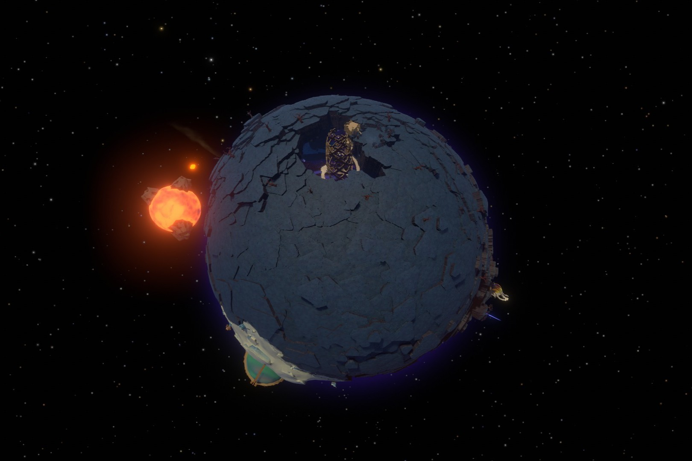
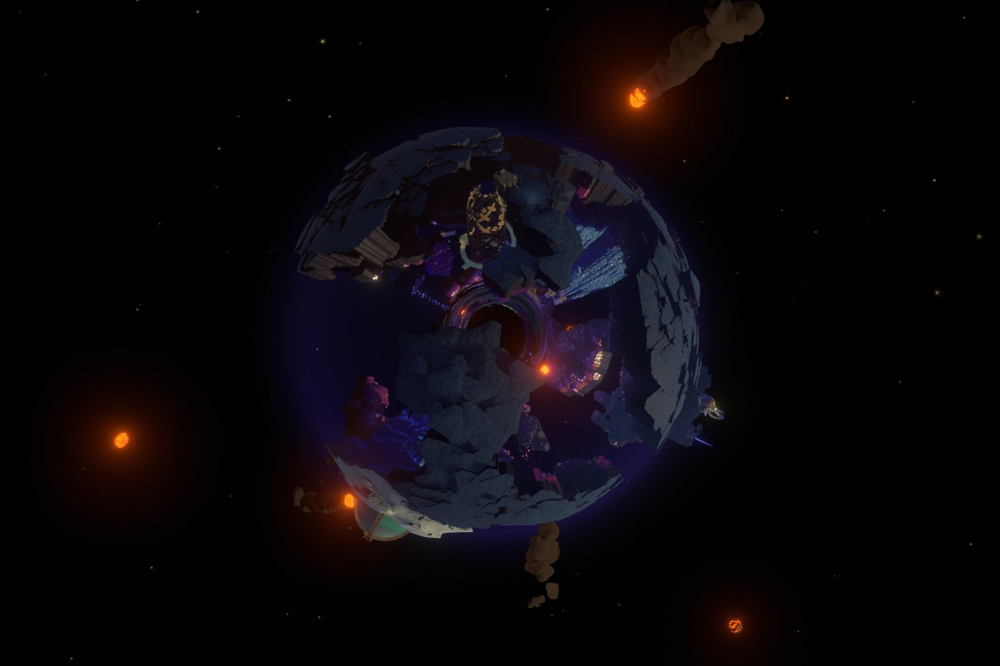
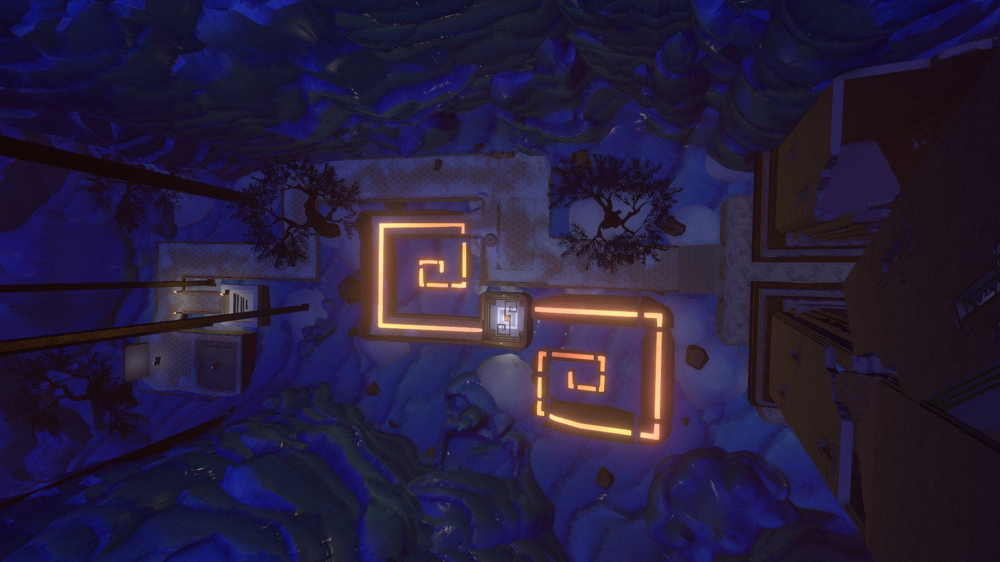
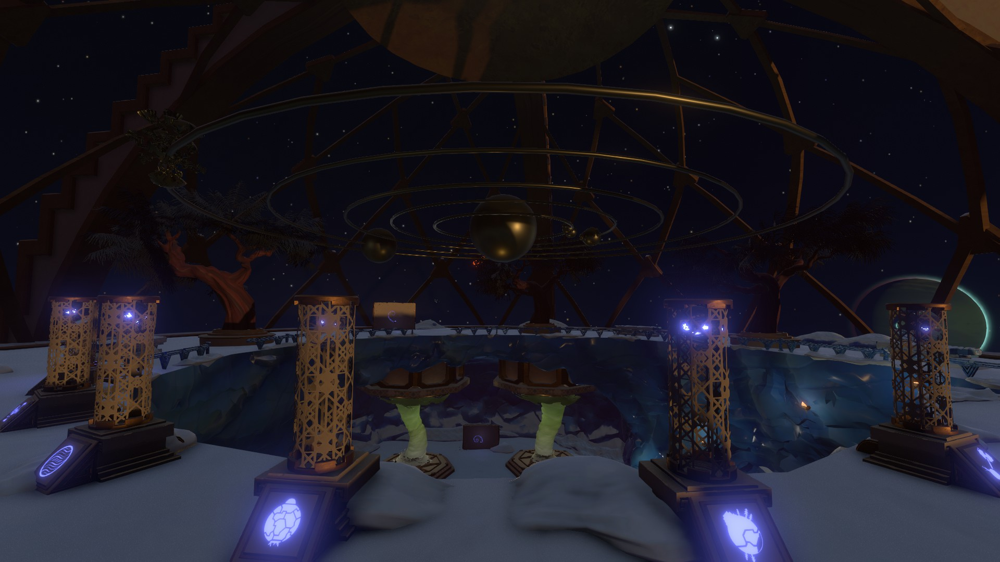
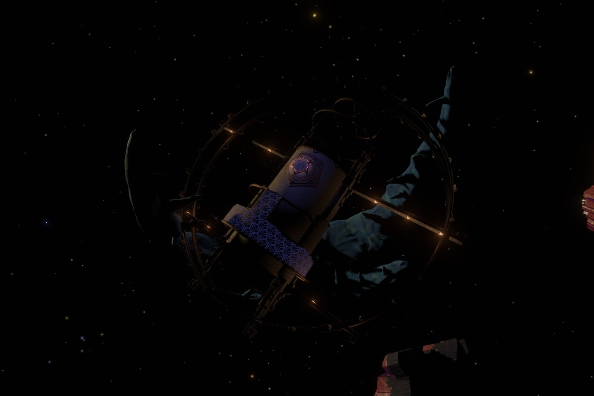

Brittle Hollow, the third closet planet to the sun, is a planet with a brittle, rocky surface surrounding a hollow center with a large black hole serving as the planet's core. Pieces of magma from Hollow's Lantern, Brittle Hollow's moon, frequently crash into the planet's surface, causing fragments to break and fall into the black hole core. Icy pieces of the surface rest at the north and south poles of Brittle Hollow and are immune to falling into the black hole. Many ancient ruins can be found on Brittle Hollow, many of which are suspended underneath the surface, where they are protected from Hollow's Lantern's magma.

Brittle Hollow at the start of the loop

Brittle Hollow at the end of the loop
NATURAL PHENOMENA
Magma shot out of Hollow's Lantern causes fragments of Brittle Hollow's surface to fall into its black hole core. Anything that falls into the black hole is teleported to the white hole at the edge of the solar system.
PLACES OF INTEREST
Northern Glacier Ruins
The Northern Glacier Ruins are located on the north pole of Brittle Hollow. It features two eroded Nomai buildings and a warp receiver connected to the White Hole Station. Nomai writing found in the ruins reveal that they had discovered a discrepancy between warps where Nomai using the warp platforms had been arriving one hundred-thousandth of a second before they departed. This phenomemon was further investigated by Ramie and Pye, who had urged Poke to come and see the result of their experiments.
Escape Pod 1
One of the three Nomai escape pods that crashed in the Outer Wilds solar system. The escape pod was launched from the Vessel after it had taken significant damage. The Nomai survivors on Escape Pod 1 were Filix, Plume, Thatch, and Kousa. One Nomai named Foli had gone missing during the crash and was never found. Seeing no suitable way to set up a shelter on Brittle Hollow's surface, the surviving Nomai created platforms below the surface leading to what is now known as the Old Settlement.
The Old Settlement
The Old Settlement is the original Nomai shelter setup sometime after Escape Pod 1 crashed.The settlement is consisted of scattered Nomai houses and buildings with a network of fragile bridges and pathways connecting them. Several Nomai writings and murals can be found depecting the Nomai's unfortunate arrival in the solar system. After a while of staying in this settlement, the Nomai realized that it was still too exposed to Hollow's Lantern's magma and decided to settle in a safer place, now known as the Hanging City.
The Crossroads
The Crossroads is a two-leveled central hub under Brittle Hollow's surface that contains Riebeck's camp and a map of Nomai structures on the planet. The map depicts five Nomai structures: The Hanging City, the Tower of Quantum Knowledge, the Crossroads, the Gravity Cannon, and the Southern Observatory. Three structures connect to the Crossroads, but the Southern Observatory can only be accessed through the Tower of Quantum Knowledge and the Gravity Cannon.
Riebeck can be found at the Crossroads playing their banjo. They arrived at their camp by literally falling onto it after tripping on a gravity crystal. Riebeck is a Hearthian archeologist that is generaly polite but very timid. Riebeck seems to be anxious about most things, but is especially anxious about space and space travel. Despite their apparent fear of space, Riebeck is driven to explore the solar system by their fascination with history, especially Nomai history, and is willing to face their fear if it means learning more about the Nomai.
The Hanging City
The Hanging City is the largest Nomai settlement in the solar system and hangs under the thick ice on Brittle Hollow's north pole, one of the two most stable locations on the planet. The Hanging City is home to the survivors of Escape Pod 1 and their descendants. The city is divided vertically into four districts: the School District, the Meltwater District, the Eye Shrine District, and the Black Hole Forge District. The School District is the lowest district made for Nomai children. The district contains classrooms with writing explaining the Nomai's history and the Nomai tradition of festivals, where Nomai from all over the galaxy meet to share their findings in science and art. The Meltwater District is the second lowest district and contains many Nomai homes. There is also a waterfall in this district and it is what the district is named after. The Eye Shrine District is the second highest district. As the name suggests, it contains a small shrine to the Eye of the Universe, where Nomai collected their knowledge and hypotheses about the Eye. The Black Hole Forge District is the highest district resting on the underside of the north pole that acts as the docking point for the Black Hole Forge. Unlike the other districts, it is inaccessible due to the vertical bridge connecting all of the districts collapsing.
School District
Meltwater District
Eye Shrine District

Black Hole Forge District
Black Hole Forge
The Black Hole Forge is a massive Nomai structure suspended on rails attached near the Hanging City. The Forge itself can be moved along these rails from a control room in the Meltwater District and can be raised up to the Black Hole Forge District or lowered down to the black hole at the planet's core. The Black Hole Forge was used by the Nomai to craft warp cores from the black hole itself.
Southern Observatory
The Southern Observatory is a domed Nomai observatory on the south pole. The door on the surface is broken from the outside, with the only accessible route being beneath the surface. Outside of the Souther Observatory are Riebeck's ship and recorded notes of their plan to search the Nomai ruins on the equator for a path underground.

Inside of the Southern Observatory is an Eye Signal Locator, a more sophisticated version of the one built on the Attlerock. The Locator's modules can be individually activated to show the orbits of each planet in the solar system, including the Eye of the Universe. However, like the previous Locator, it is also unable to locate the Eye's orbit and instead erratically creating models of potential orbits. Also inside of the Observatory are two active models of cyclones from Giant's Deep, created by a Nomai named Spire to aid the team building the Orbital Probe Cannon. The models depict two varieties of cyclone: the most common type that spins clockwise and forces things upwards, and a rare type that spins counterclockwise and forces things downwards.
Gravity Cannon
The gravity cannon is a huge cylindrical structure that generates a strong upward gravity field. The Nomai used the gravity cannon to launch their shuttles into space. The gravity cannon has two controls: activating the gravity cannon and calling a shuttle home. Calling a shuttle at this gravity cannon recalls the Nomai shuttle located on the Quantum Moon. Inside the shuttle is a Nomai log written by Solanum, where she expresses her excitement about standing on the Quantum Moon for the first time. She mentions that, as expected, her shuttle landed on the Quantum Moon's south pole, though she still does not know why. She explains that as a child, she considered such unknowns sinister, but now she knows that they bear no ill will, stating, "The universe is, and we are."
Tower of Quantum Knowledge
The Tower of Quantum Knowledge is a massive Nomai tower suspended from a section of Brittle Hollow's crust where the Nomai found a Quantum Shard they named the Tower Shard. The Tower of Quantum Knowledge contains cruicial information for Nomai making the pilgrimage to the Quantum Moon. On the highest level of the tower is a device with glowing symbols depicting each planet in the solar system, as well as a symbols depicitng the Quantum Moon and the Eye of the Universe. This device is a larger version of the Quantum Moon Locator on Ember Twin. There is also Nomai writing on the top floor where a Nomai named Bells welcomes Solamun and informs her that her arrival here means she is ready to depart for the Quantum Moon. Bells tells Solanum that the Quantum Moon will carry her to its sixth and most secret location, just as it did for many in her clan before her. Bells also reminds Solanum of the Quantum Moon's final rule: "To explore the sixth location, the shrine must be on the moon's north pole." A scroll can also be found in the tower with writing of Bells informing other future visitors about the history of the pilgrimage to the Quantum Moon. Bells explains that the pilgrimage to the Quantum Moon is a way of honoring members of the clan who came before them, the ones who crash landed on Ember Twin and Brittle Hollow and had their curiosity kept alive by a mysterious wandering moon.
THE WHITE HOLE
The White Hole, located on the outskirts of the solar system, is the paired opposite to Brittle Hollow's black hole core. The White Hole is stationary and does not orbit the sun. Objects that fall into the black hole core will exit through the White Hole, but are not able to return through it. Being the opposite of the black hole, the White Hole's reverse gravity repels any attempts to land on its surface. The White Hole has no atmosphere and its surroundings are entirely zero-gravity.
The White Hole Station

The White Hole Station is a warp station positioned near the White Hole designed to transport people who have fallen into the black hole back onto the surface of Brittle Hollow. The White Hole Station has two levels: the warp portal, and the controll room that activates and sets the rotation of the station. When the station's warp platform is aligned with Brittle Hollow, it will teleport anything on it to the connected warp receiver on Brittle Hollow's surface.